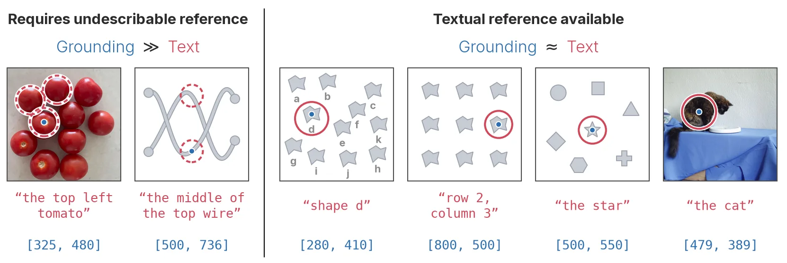
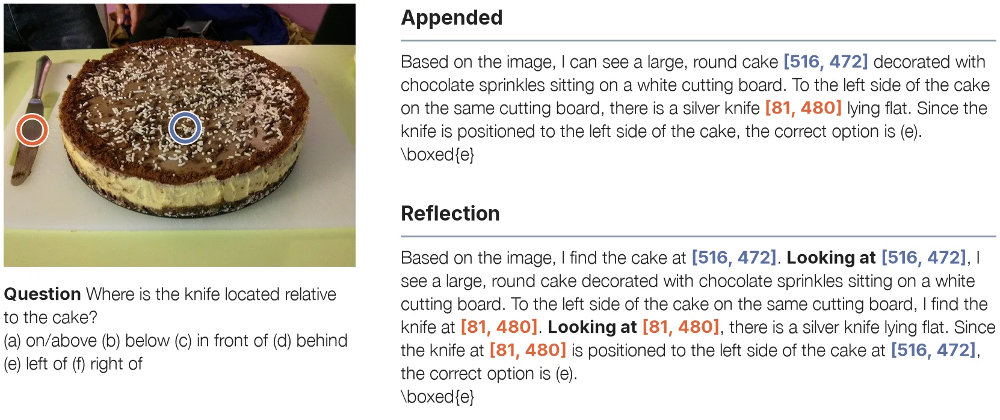
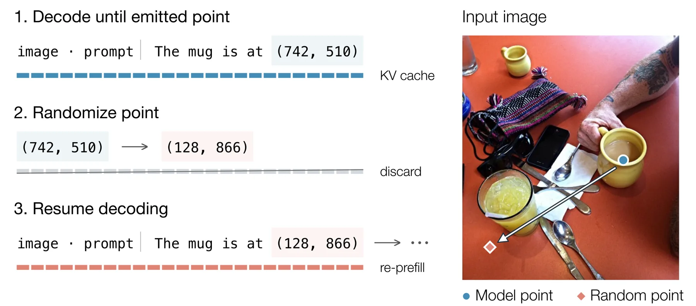
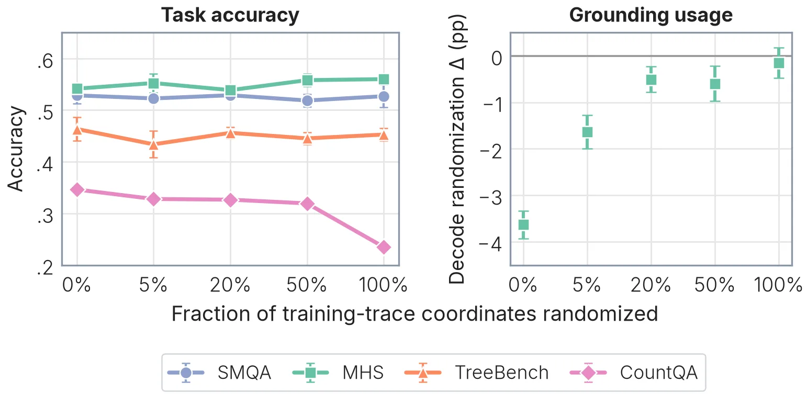
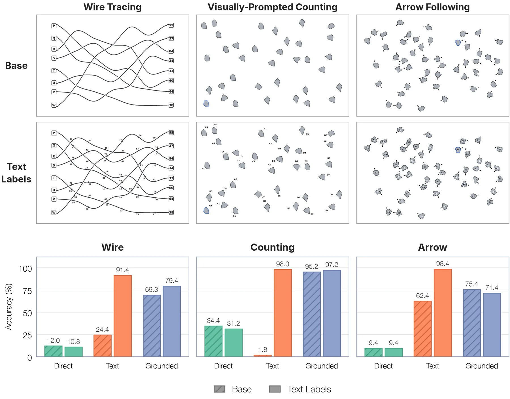
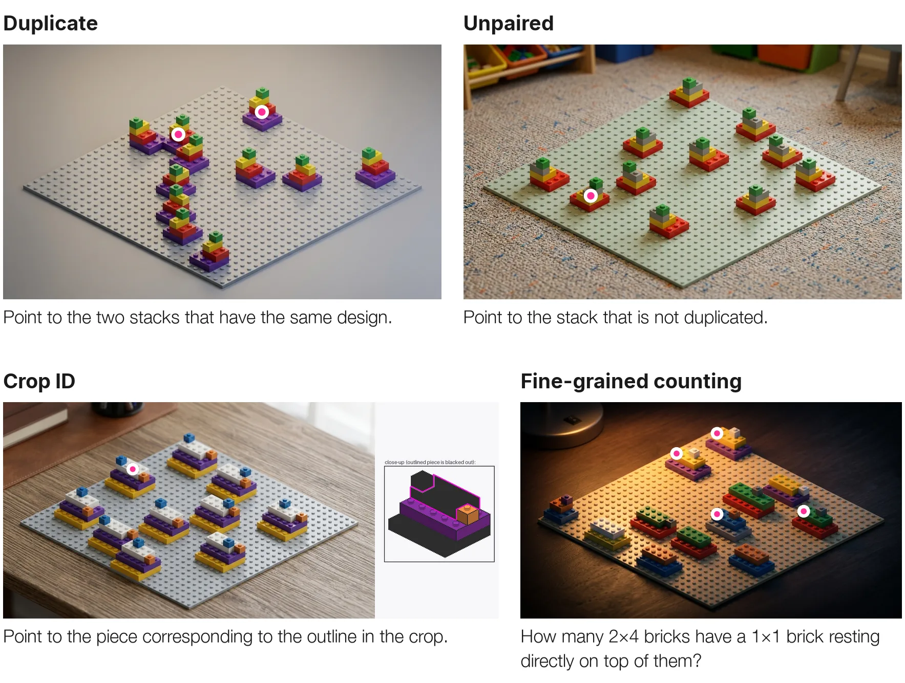

Where and Why is Grounded Reasoning Useful：坐标 grounding 到底在什么任务上起作用
Where and Why is Grounded Reasoning Useful?
方法上有两条线：分析线用解码期坐标损坏（生成坐标时随机化并重置 KV cache）测 grounding 使用率，发现多个开源 grounded 模型在空间/感知任务上性能几乎不变，只有计数明显下降；训练线从 Qwen3-VL-8B 出发，用 6,368 条高质量 SFT 数据做冷启动再上 GRPO 强化学习，比较 grounded 与纯文本两条配方。结论是 SFT 阶段计数 +3.6（CountQA）/+2.6（FSC-147），空间推理全部不显著；RL 阶段甚至出现 VSR −5.5、EmbSpatial −1.7、MultihopSpatial −2.7 的回退。合成探针里 wire-tracing 69.3 对 24.4、counting 95.2 对 34.4（direct），但一旦图上加文本标签，文本推理反超。BrickVision 上 GPT-6 Astra 68.7%，其余前沿模型多在 15–26%。
CountQA gain
VSR delta after RL
BrickVision finetuned comparison
BrickVision best model
作者、单位与技术谱系 · Research context
作者与单位
研究脉络
- iVGR（Zhang et al., arXiv 2605.31096）方法基座关系：iVGR 报告“提示模型不要输出坐标反而更好”，并归因于坐标错误；本篇用解码期损坏得到相反证据，指出模型大多没在用坐标，因此两种解释并不一致。[论文 3.1 节与相关工作]
- TreeVGR（Wang et al., arXiv 2507.07999）技术前作关系：本片的 SFT 数据构造与 RL 训练流程沿用 TreeVGR 的设定，但换用了自建的高质量坐标标注并调整了 grounding 奖励。[论文训练设置]
- Thinking with Visual Primitives（Lu et al., 2026）同期对照关系：该工作报告 grounding 在通用 VQA 与线缆追踪上有效，但未与匹配的文本推理基线比较；本篇补上了受控对照，并给出更窄的适用条件。[论文相关工作与第 4 节]
合作网络
- David Yan 双单位署名David Yan → Elorian / Princeton University关系：共同署名[arXiv HTML 机构行]
- Elorian 团队集体署名Le Xue / Forrest Huang / Qiuyi Zhang / Dustin Tran / Andrew M. Dai / Yinfei Yang → Elorian关系：共同署名[arXiv HTML 机构行与项目页]
- 本篇 → TreeVGR 训练栈Grounded reasoning 配方实验 → TreeVGR（RL 数据与训练设定）关系：技术依赖[论文训练设置]
作者单位取自论文首页；与 iVGR、TreeVGR、Thinking with Visual Primitives 的关系来自正文引用与实验设定，属有来源的解读，未推断任何师生关系。
方法本质拆解 · What actually changed
真的训练了两条配方做对照
从 Qwen3-VL-8B Instruct 初始化，先冷启动 SFT（6,368 条高质量数据，坐标以点形式写入），再用 GRPO 做强化学习，奖励含格式、正确性与 grounding 三项；纯文本配方只去掉 grounding 奖励与坐标。作者还训练了 3 个随机种子并在每个检查点上评测 3 次，用配对标准误加种子方差构造 95% 置信区间。
约束是坐标精度与模板形式
SFT 数据经过坐标正确性过滤，剔除错误坐标或塞入大量无关坐标的样本；训练时还系统随机化不同比例的坐标，用来观察标注噪声如何影响模型对坐标的依赖。推理模板分 Appended（提到物体时附加坐标）与 Reflection（“Let's look at [x,y]”），后者被证明能显著提高坐标使用率，因此后续实验统一采用。
推理期做坐标损坏干预
分析阶段不改权重，只在解码时对每个生成的坐标做随机化并重置 KV cache，让后续 token 只能基于被污染的坐标继续推理，重复 20 次取平均。这比生成完整思维链后再改坐标更严格，因为后者保留了模型已经从坐标推出的文本结论。
用“参照能否语言化”解释 grounding 的收益
机制解释是：语言是压缩通道，能被唯一描述的物体不需要坐标，坐标的价值在于维持那些无法用词唯一指向的参照（正在数的第几个、线走到哪、箭头跳到哪个块）。因此计数与追踪受益，而物体属性与常规空间关系不受益；论文没有证明的是，这一解释能否推广到 crop/zoom 类需要重新编码图像的方法。
输入 = 图像问答对 + 高质量带点坐标的思维链；改变的位置 = 坐标是否进入推理链以及以何种模板进入；约束/动作 = 坐标正确性过滤 + 随机化消融 + 解码期损坏诊断；直接效果 = 计数显著提升（+3.6/+2.6），空间推理无显著增益甚至回退。

桥接价值Bridge
桥接价值
它回答的是“空间表征要不要以坐标形式进入推理链”这个工程问题：如果任务中的物体能被唯一语言描述（标签、颜色、位置短语），坐标不但没用还可能引入误差；只有当参照无法用语言唯一确定时，坐标才成为必要通道。这对我们设计空间问答、报告生成与多传感器诊断接口很实用——可以先判断任务是否真的需要度量 token，再决定是否让模型输出坐标。它也提醒我们，很多“空间推理提升”可能来自更强的文本先验，而不是几何理解。
方法与模块Method
方法摘要
分析：在每个坐标生成位置注入随机坐标并重置 KV cache，使后续推理只能基于被污染的坐标，重复 20 次采样后比较平均准确率变化；同时对比 Appended 与 Reflection 两种把坐标写进思维链的模板。训练：基于 SpatialMQA 与 MultihopSpatial 的标注，用 Gemini 3.5 Flash 生成无坐标推理链，再改写成带点坐标的版本，过滤错误坐标后得到 6,368 条 SFT 数据；先冷启动 SFT，再用 TreeVGR 的 RL 数据与格式/正确性/grounding 三项奖励做 GRPO。评测覆盖空间推理（SMQA、MHS、EmbSpatial、VSR、OmniSpatial、ERQA）、细粒度感知（V*、MME-RW、TreeBench）与计数（CountQA、FSC-147）。
可迁移模块
第一是解码期损坏这套诊断工具：它不依赖人工标注，就能判断一个多模态模型是否真的在用它输出的几何 token，可以直接拿来做我们模型的“是否真在用深度/位姿 token”检查。第二是“可描述参照 vs 不可描述参照”的任务分类法：它给出了一个可操作的判据，用来决定某个空间任务该走语言接口还是坐标接口。第三是 Reflection 模板（“Let's look at [x, y]”）比直接附加坐标带来更高使用率，这个提示工程细节成本极低、可立即试用。

证据Evidence
关键证据与数字
使用率分析（表 1）：开源 grounded 模型在坐标损坏后性能变化多在 ±1 个点内（如 TreeVGR-7B-RL 在 MultihopSpatial −0.17、V* −0.08），只有计数出现 −3.19（CountQA）；作者自训的 Reflection 版本损坏后下降更大（V* −4.16、CountQA −3.88），说明它更依赖坐标。训练配方（表 3）：SFT 后 grounded 相对纯文本在 CountQA +3.6±2.4、FSC-147 +2.6±1.3，空间推理与感知全部不显著；RL 后计数仍 +3.4/+2.1，但 VSR −5.5±1.3、EmbSpatial −1.7±0.9、MHS −2.7±1.9 显著回退。合成探针：无标签时 wire-tracing 69.3 对 24.4、counting 95.2 对 34.4（direct）；加标签后文本推理反超。BrickVision（1,000 题）：GPT-6 Astra 68.7%，Claude Opus 5.5 26.1%，GPT-5.6 Sol 18.9%，Gemini 3.8 Flash 15.5%；同域微调后 grounded 82.9 对 text 61.2。
边界与下一步Limits & Next Step
边界与风险
结论只覆盖“坐标式 grounding”，不含 crop/zoom 工具调用或特征回放类方法，因此不能推论所有视觉重定位手段都无效。模型侧只用了 Qwen3-VL-8B 一个底座，且刻意选旧模型以隔离配方效应，换更强或已原生支持 grounding 的底座（如 Qwen3.5）结论可能变化。SFT 数据由 Gemini 3.5 Flash 改写，教师模型的推理风格会进入训练分布；BrickVision 用程序化渲染再经 Nano Banana 风格迁移，作者必须用额外包围盒渲染来对齐分割掩码，说明生成图与真值之间存在对齐风险。作者在结论里也承认一个结构性矛盾：grounding 最有用的任务恰恰最难自动获得坐标标签，因为自动标注依赖文本指代表达。
下一步实验
第一步把解码期损坏移植到我们自己的多模态模型上：分别损坏深度 token、位姿 token 与图像坐标 token，看下游答案变化，判断模型到底在用哪种几何信息。第二步在我们已有的空间问答集上标注“参照是否可唯一语言化”，验证这个判据能否预测 grounding 的增益；若成立，就可以做成路由规则。第三步做小规模对照：同一底座分别用纯文本 CoT、坐标 CoT 与 Reflection 模板训练，只在计数/追踪类任务上期待增益，同时记录空间推理是否回退，避免把“加了坐标”误当成普遍提升。







